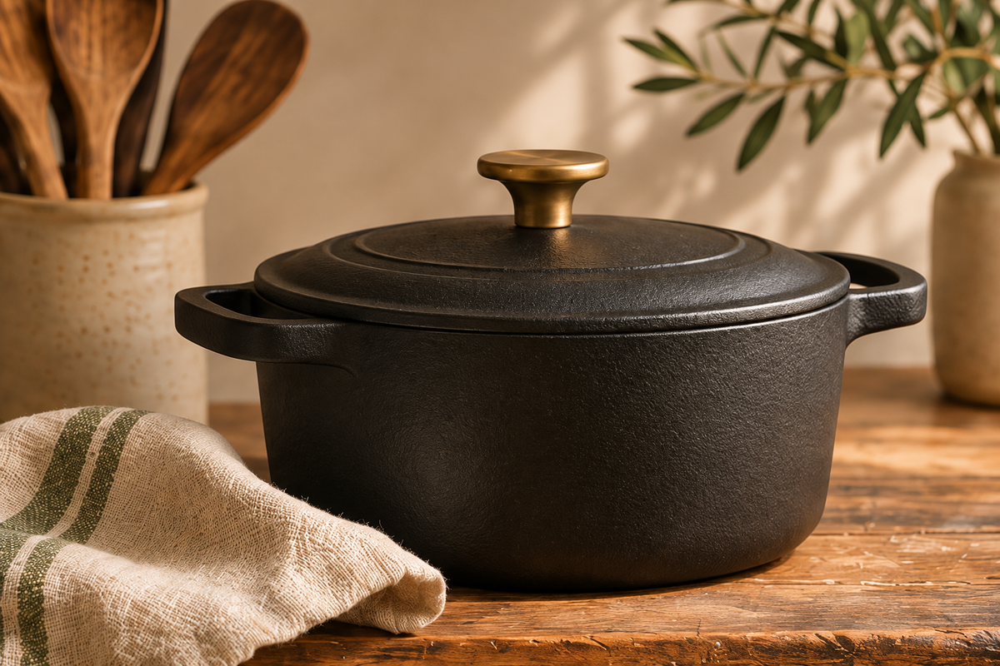
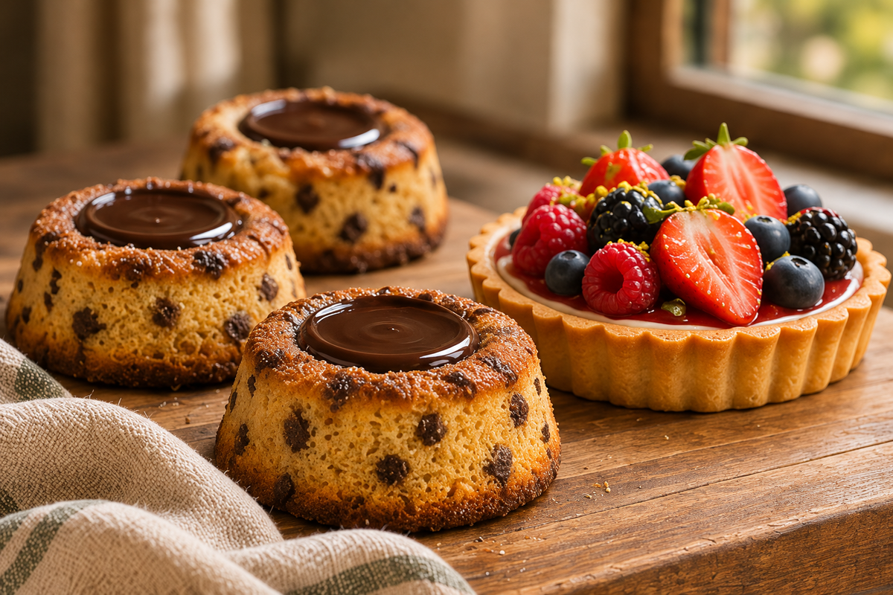
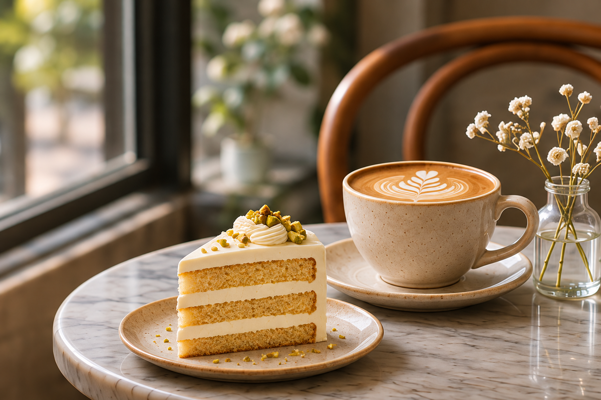
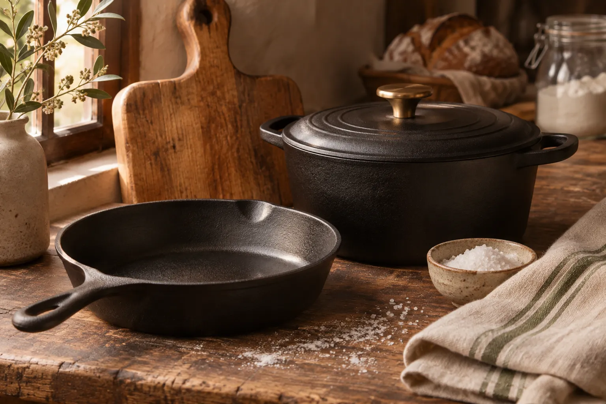
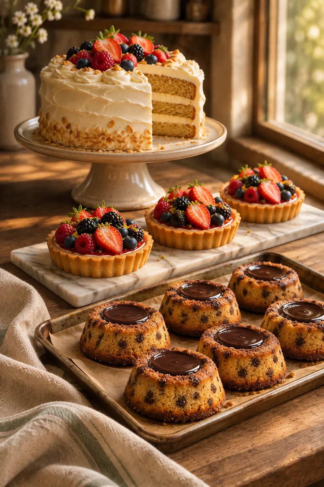
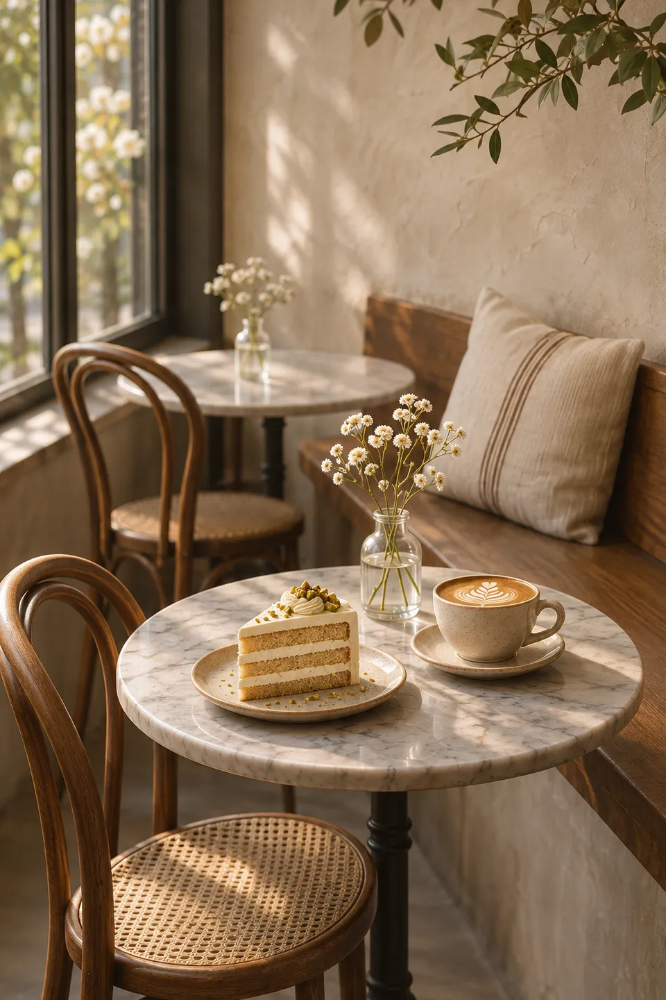
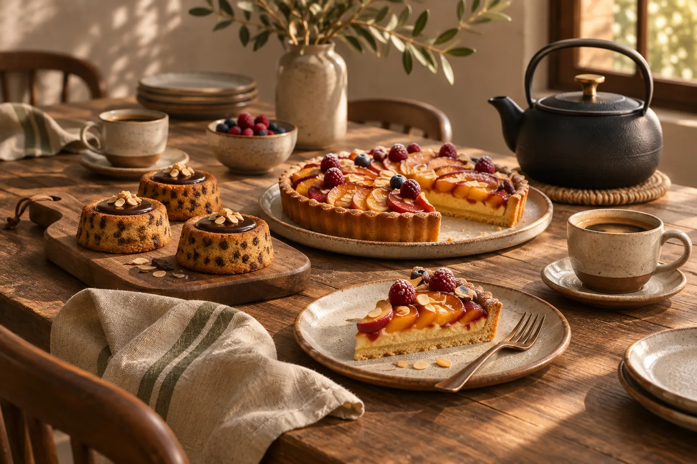

Company
Atelier JW LLC is a Texas limited liability company, founded in August 2026 in Celina, Texas, by its co-founders Yoonjae (Jay) Heo and Mulgyeol (Wave) Heo.
Atelier JW is the family company of Jay and Wave Heo in Celina, Texas, with a Korean sensibility and Texas hospitality. Write to Jay at jayheo@atelier-jw.com.



Illustrative photographs. Forge Kitchen is still in development, and the café is not open yet.

Our first brand, now in development, is a line of kitchen and tabletop goods for cooking, baking and gathering at home. The pieces are meant to be simple and durable, made for daily use and worth keeping on the counter. Jay’s restaurant experience shapes the line.


The next chapter is a neighborhood bakery and café we are working toward, for cakes, tarts and tigrés with good coffee beside them. It grows out of Wave’s love of baking.

Atelier JW LLC is a Texas limited liability company, founded in August 2026 in Celina, Texas, by its co-founders Yoonjae (Jay) Heo and Mulgyeol (Wave) Heo.
For Forge Kitchen, partnerships or the bakery project.
jayheo@atelier-jw.com